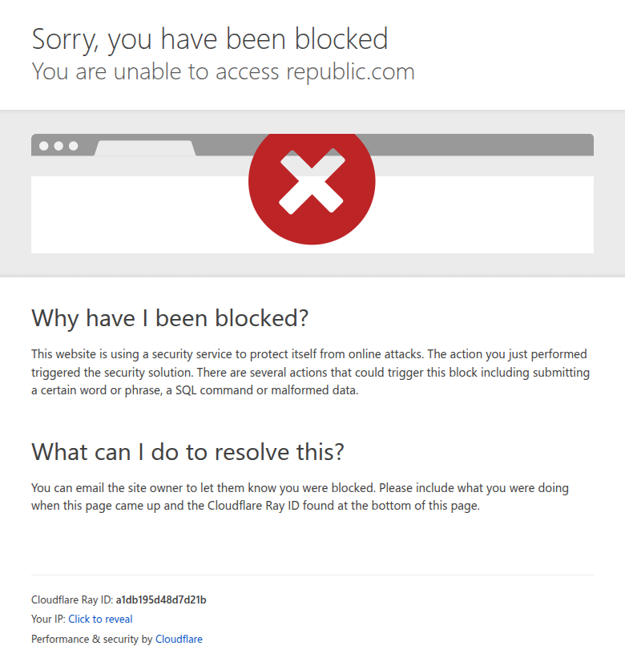

Profile
- Company
- Republic
- Url
- https://republic.com/
- Source Category
- Capital & discovery marketplaces
- Research Status
- Deep Cited Research / Draft Complete
- Current Status
- live - active private-market investment/crowdfunding platform with founder raise pages and annual reports.
- Founded Launch Year
- 2016
- Company Age
- 10 years
- Hq Country
- United States
- Operating Area
- global; 150 countries cited
- Target Users
- retail investors, accredited investors, issuers/founders, funds, asset owners, tokenization clients
- Product Category
- private-market investment marketplace, crowdfunding portal/broker-dealer ecosystem, tokenization, secondary trading
Product Flows
- Swipe Card Interface
- no
- Mutual Match
- no
- Ai Matching Scoring
- not found
- Ai Deck Scoring
- not found
- Founder To Founder Flow
- no
- Founder To Investor Flow
- yes - public offering/campaign pages connect issuers to investors
- Project Profiles
- yes - company/campaign profiles
- Messaging Collaboration
- yes - public updates/comments and post-investment messages
- Mobile App
- not found
- Web App
- yes
Security & Documents
- Nda Gated Unlock
- no
- Data Room
- not found
- E Signature
- yes - regulated investment subscription/onboarding implied; exact founder e-sign workflow not public
- Meeting Prep Ai Briefing
- not found
Pricing, Funding & Traction
- Pricing Model
- investors free per FAQ; issuers pay on successful fundraise; tokenization/advisory pricing not public
- Business Model
- issuer success fees, broker/dealer and portal activity, investment/advisory/tokenization services, secondary marketplace infrastructure
- Total Funding
- $186M+ verified from 2021 Series A $36M and Series B $150M; cumulative total beyond those rounds not found
- Funding Rounds
- 2021 Series A $36M; 2021 Series B $150M
- Investors
- Valor Equity Partners, Galaxy Digital/Galaxy Interactive, Brevan Howard, Atreides, Motley Fool Ventures, HOF Capital, Tribe Capital, CoinFund, Pillar VC
- Funding Source Type
- venture/private equity backed
- Last Funding Date
- 2021-10-19
- Users Traction
- 3M+ community members, 150 countries, 2,500+ companies/ventures funded, 31 unicorns in portfolio; homepage data as of 2025 cites $2.6B capital deployed and 3k global raises supported
- Deals Funding Facilitated
- $2.6B+ deployed in 2024 annual report; May 2026 press says over US$3B deployed
- Partnerships
- Carta, Hamilton Lane, BitGo, Solana, Animoca Brands, INX ATS referenced in official pages
- Media Coverage
- PRNewswire covered $150M Series B
- Product Update Activity
- active; May 5 2026 tokenized Animoca equity launch and current tokenization pages
- Acquisition Rebrand History
- spun out from AngelList per secondary source; announced Seedrs acquisition plan in 2021; acquired/operates multiple ecosystem subsidiaries; current brand Republic
Scores
- Product Overlap Score
- 5
- Feature Maturity Score
- 3
- Market Traction Score
- 3
- Funding Strength Score
- 3
- Ai Depth Score
- 3
- Nda Security Strength Score
- 4
- Network Moat Score
- 3
- Direct Threat Score
- 3.6
- Source Confidence
- High
Evidence Notes
- Primary Sources
- https://republic.com/
https://republic.com/2024
https://republic.com/2021
https://republic.com/insights/republic/a-letter-from-the-ceo
https://republic.com/insights/republic/animoca-tokenization
https://republic.com/tokenization
https://republic.com/contact
https://republic.com/terms
https://faq.republic.co/article/241-does-it-cost-anything-to-invest-on-republic - Secondary Sources
- https://www.prnewswire.com/news-releases/republic-announces-a-150-million-series-b-round-301403740.html
https://www.linkedin.com/company/republic.co
https://legacy.vault.com/company-profiles/financial-technology/republic - Unsupported Claims
- No verified source found for AI matching/scoring, AI deck scoring, swipe cards, or founder-to-founder flow.
- Contradictions
- Capital deployed varies by date: $2.6B+ in 2024 annual report/homepage data, over US$3B in May 2026 Animoca announcement.
- Last Checked
- 2026-07-19
- Notes
- Material founder-investor marketplace competitor for regulated community fundraising, not mutual matching.
Registration Flow
Research date: 2026-07-19. Screenshots are sanitized and omit any credentials or tokens.
Outcome: no account created. Automated access to the founder registration path was stopped by a Cloudflare block.
Stop point: public Republic page / Cloudflare protection before account creation could begin.
- Opened Republic's public site and founder-raise entry path from the profile context.
- Attempted to reach the registration flow for founders.
- Automation stopped at Cloudflare protection; no form submission, verification, or account creation occurred.
